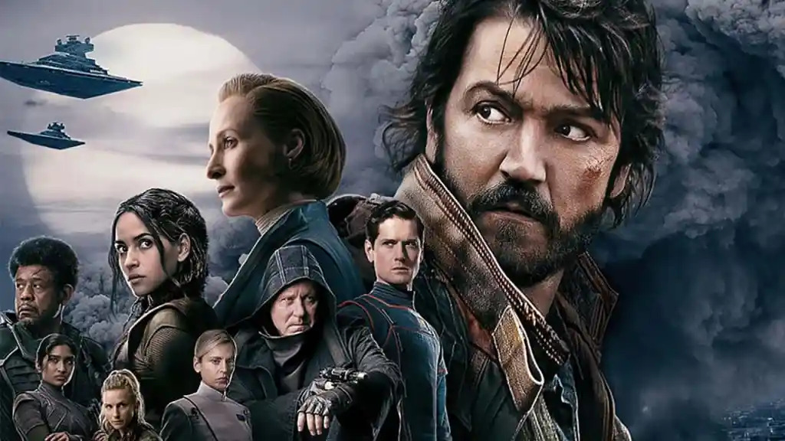
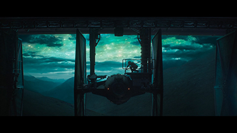
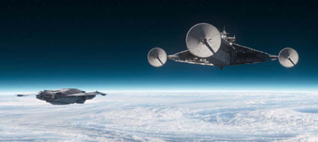
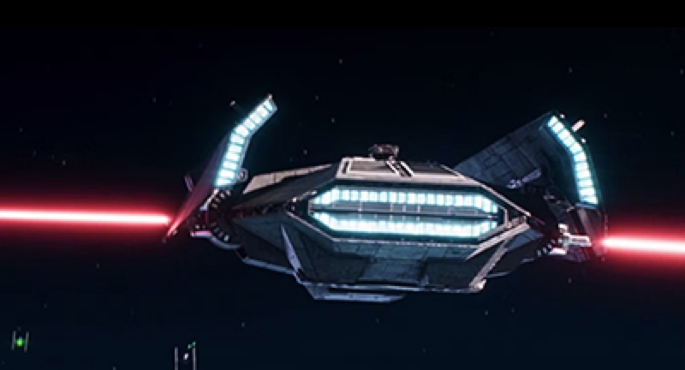
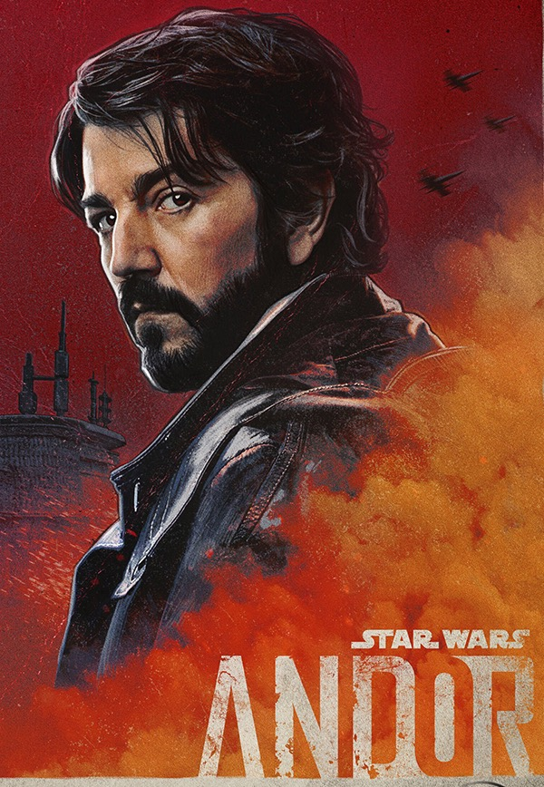
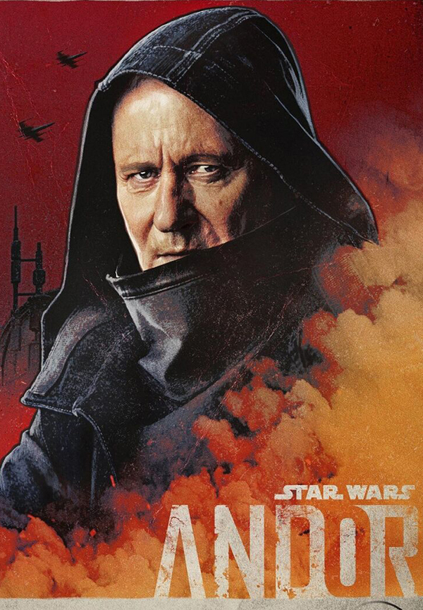
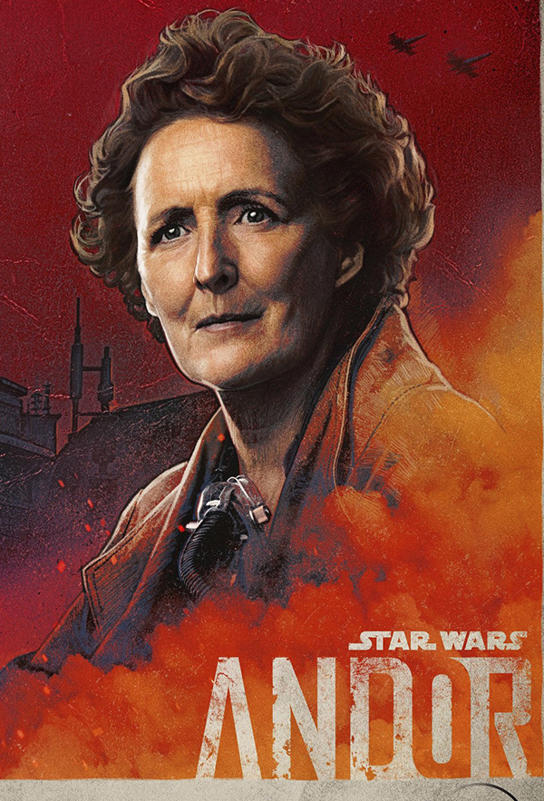
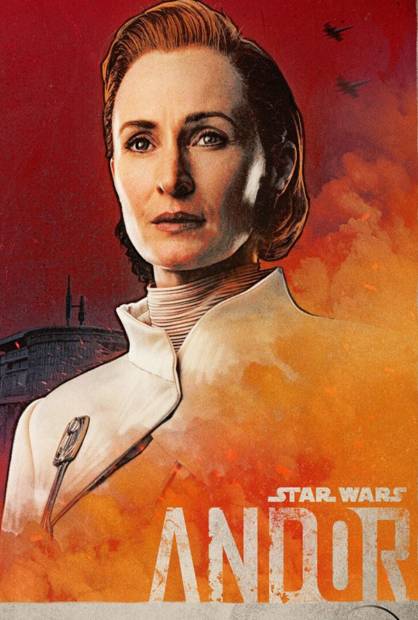

Andor serves as a prequel to Rogue One: A Star Wars Story, following the character of Cassian Andor long before he meets Jyn Erso and steals the plans for the Death Star. Taking place five years before the events of Rogue One, it follows a cast of characters as they slowly come together to form what will become the official Rebel Alliance against the Galactic Empire.




Cassian Andor, lives on the rough-and-tumble planet of Ferrix, and is known as a scoundrel to the town: a wastrel, a swindler, and a guy who doesn't always make the best decisions. When he is involved in a crime one night, Cassian Andor gets on the Empire's radar. But someone is soon to offer him a chance to do something more with his life.

On the surface, the wily Luthen Rael acts as a collector and something of a black market dealer. His real aim, however, is to quietly build the seeds of rebellion. His meeting with Cassian Andor has changed both their lives, and potentially the fate of the galaxy itself.

Maarva is a wily ship raider who adopted Cassian when he was young and taught him all she knows. While she doesn't condone Cassian's shadier activities, she loves him dearly. As a former leader of Star Wars' proto-Rebellion, Maarva has become part of the new uprising as her son gets drawn into events, despite her declining health.

At this point in the Star Wars timeline, Mon Mothma is in a very dangerous and difficult position. As a savvy politician in the Imperial Senate, Mon Mothma is also one of the most important architects of what will become the Rebellion. Along with Luthen Rael, she plays a key role in helping to turn the tide against the Imperial regime.